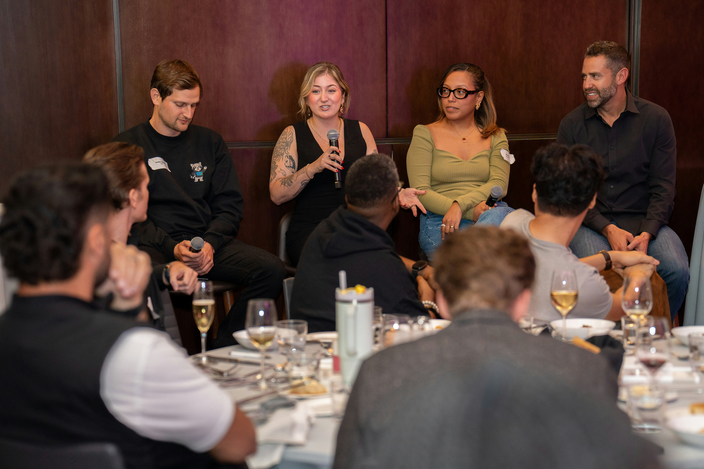

Jornadas · Letras 2026
Escribir juntos: por qué siguen siendo necesarios los encuentros literarios
La literatura nace muchas veces en soledad, pero crece cuando las historias se comparten, se discuten y encuentran nuevos lectores.

Escribir suele imaginarse como una actividad individual: una persona frente a una página en blanco intentando encontrar la forma adecuada de contar una historia. Sin embargo, detrás de muchos textos existe también intercambio, conversación y aprendizaje colectivo.
Las jornadas literarias ofrecen un espacio donde escritores, lectores y profesionales del mundo editorial pueden encontrarse fuera de los canales habituales. Una charla puede descubrir nuevas referencias y un taller puede proporcionar herramientas para enfrentarse a problemas concretos de la escritura.
Escribir es una actividad individual, pero aprender a escribir no tiene por qué serlo.
Compartir un texto permite observarlo desde otra perspectiva. Las preguntas de otras personas pueden descubrir problemas de ritmo, estructura o claridad que son difíciles de detectar después de muchas horas trabajando sobre el mismo manuscrito.
Qué aporta un encuentro literario
Participar en actividades presenciales permite complementar el trabajo individual con experiencias difíciles de obtener únicamente mediante la lectura o la práctica en solitario.
- Descubrir nuevas técnicas y formas de escritura.
- Conocer otros procesos creativos.
- Recibir opiniones sobre el trabajo propio.
- Encontrar nuevas lecturas y autores.
- Compartir experiencias con otros participantes.
Una comunidad alrededor de las historias
Los encuentros literarios también permiten crear conexiones entre personas con intereses similares. Lectores, autores, editores y participantes en talleres pueden compartir un mismo espacio y aproximarse a la literatura desde perspectivas diferentes.
Estas conversaciones no terminan necesariamente cuando acaba una charla. Una recomendación, una técnica descubierta durante un taller o una nueva lectura pueden continuar influyendo en el proceso creativo mucho después de finalizar las jornadas.
Letras 2026
Letras 2026 parte de esta idea de intercambio. Durante tres días, las charlas y talleres permitirán aproximarse a la literatura desde diferentes perspectivas y crear un espacio en el que escribir, leer y conversar formen parte del mismo proceso.
La propuesta no pretende ofrecer una única manera de entender la escritura, sino reunir experiencias distintas y proporcionar herramientas para que cada participante pueda continuar desarrollando su propia forma de crear y relacionarse con las historias.